Karate Do
Karate Do
Corsi per bambini e ragazzi
Per giorni e orari contattaci.

残心道La Via Marziale
Lo ZanShinDo è una Via graduale di autoconoscenza che passa attraverso il coraggio.
Ogni volta che superiamo un ostacolo ci scopriamo più capaci, più consapevoli, più operativi. Quello spazio occupato si chiama Zan Shin.
ZanShinDo è, quindi, una Via graduale di riconoscimento della nostra vera natura, senza la quale non possiamo realizzare lo scopo della nostra vita: essere in armonia con noi stessi e il mondo.


空手道Filosofia di vita
Il Karate è nato come arte marziale che insegna il combattimento e l'autodifesa, con il tempo il Karate si è trasformato in filosofia di vita, in impegno costante di ricerca del proprio equilibrio, in insegnamento a «combattere senza combattere», a diventare forti modellando il carattere, guadagnando consapevolezza e gusto nella vita, imparando la capacità di sorridere nelle avversità e di lavorare con determinazione e nel rispetto degli altri. Solo quando questo insegnamento verrà compreso appieno, l'allievo potrà essere veramente libero e realizzato.
Karate Do
Per giorni e orari contattaci.
 Karate Do
Karate Do
Per giorni e orari contattaci.
Kumite
Un'intensa e completa preparazione atletica e marziale per raggiungere i massimi livelli nelle competizioni di Kumite, il combattimento.
La preparazione prevede allenamenti settimanali, nonché seminari mensili di approfondimento presso l'Hombu Dojo di Genova, durante i quali i nostri allievi si allenano insieme a karateka provenienti da altre scuole italiane.
Chiedi informazioni

Bushidō
Il Bushido, la Via del guerriero, si fonda su sette concetti fondamentali.

Onestà e GiustiziaSii scrupolosamente onesto nei rapporti con gli altri, credi nella giustizia che proviene non dalle altre persone ma da te stesso.

Gentile CortesiaComportarsi con rispetto anche verso i nemici: il miglior combattimento è quello evitato.

Eroico CoraggioSuperare la paura e vivere pienamente, con un coraggio non cieco ma intelligente e forte.

OnoreVi è un solo giudice dell'onore del Samurai: lui stesso.

CompassioneUtilizzare la propria forza per il bene comune.

Completa SinceritàParlare e agire sono la medesima cosa.

Dovere e LealtàAssumere piena responsabilità e rimanere fieramente fedele a coloro di cui si è responsabili.